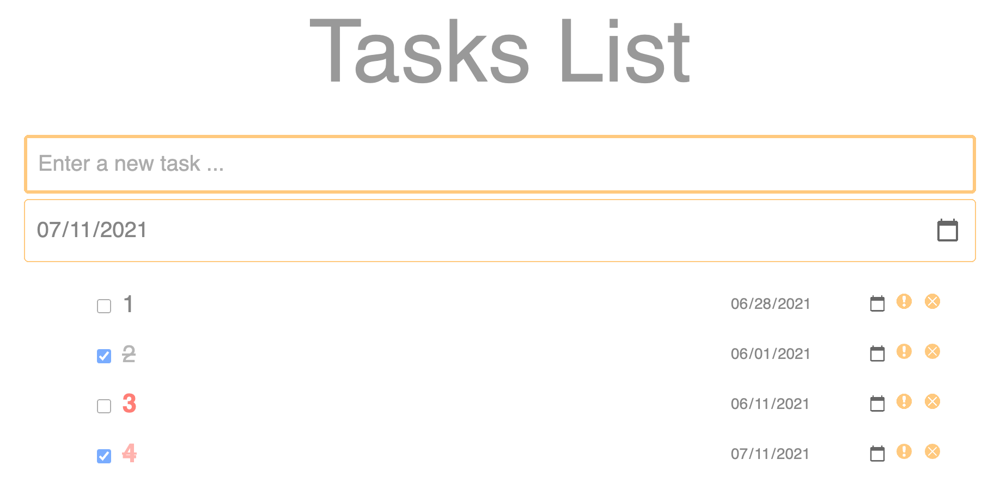

Dayuan Tan's Home Page


Current Computer Science Ph.D. student.
Vehicular Ad hoc Network (VANET), Connected Autonomous Vehicles (CAV)
Internet of Vehicles, Internet of Things
Intelligent Transportation, Smart City
Artificial Intelligence, Machine Learning
Distributed System, Blockchain
Use Find to find all files ending with .sh and do one more thing.
Unzip multiple zip files into each specific dir.
Copy files with diff names to a dir.
My review of important, common algorithms, and practices of algorithms on Leetcode.
My notes about the boook "Crack the code interview, 6th edition.
Learn sortablejs: My notes when I learn how to use sortablejs for frontend javascript.
Frontend only storage methods: Indexed DB, LocalStorage. (Sqlite needs backend server.)
JS_customElement_shadowDOM_eg: Show how to use Javascript customElement and shadow DOM.
Read/fetch data from PDF table.
How to change your remote repo url/name on local?
How connect local GitHub repo to remote repo?
Git clone a private repo which you got access.
SUMO: error: typemap file "/usr/share/sumo/data/typemap/osmPolyconvert.typ.xml" not found.
Leave me a message by posting an issue.
This GitHub repo hosts our open source academic researches files, codes, data and so on.
It includes:
| Projects Summary | |
|---|---|
| Projects Categories | Project Names |
| Distributed Systems | A Centralized Multi-User Concurrent Bank Account Manager (Multithreading, Synchronization, Mutex). C++. |
| A distributed system with load balancer. Java. | |
| Computer Architecture | Design your ISA and Hardwares; Test using Quartus (ModelSim). SystemVerilog. |
| Improve the performance from architecture perspective for 2 stock-price-prediction programs. | |
| Full Stack | Web Based Pokemon Go Game. Apache, MariaDB, PHP, JavaScript. |
| Tasks List Management. JavaScript. | |
| WSN | Wireless Sensor Network: RSSI-based Localication for WSN nodes TinyOS, MEMSIC Smart Dust, Mote, IRIS, Crossbow, JAVA, nesC. |
Key Words: Distributed System, Concurrent, Multithreads, Synchronization, Concurent, Critial Section
Tech Stack: Linux/Ubuntu, C++11, POSIX
One thread for each client. Synchronization is ensured by add mutex load for each account. Did scalability experiments.


Key Words: Distributed System, Load Balancer, Byzantine Fault Tolerence
Tech Stack: Linux/Ubuntu, Tomcat, Axis, MySQL, JAVA, Eclipse
Project 1: Socket. Create a new thread for each client connection. (Python)
Project 2: Design a distributed system including load balancer, Byzantine Fault Tolerence. (Java)


Key Words: ISA, Hardware, Processor, Datapath, Control Signals, MIPS, ARM, x86, RISC
Tech Stack: ISA Design, Processor Design, Datapath and Control Signals Design, Assembly Language, SystemVerilog, Quartus (ModelSim)
Design an instruction set and overall architecture (ISA) for a special-purpose reduced instruction set (RISC) processor. Design the hardware for the processor core. Implement these hardwares using SystemVerilog. Test the ISA and the program in Quartus (ModelSim).


Key Words: Frontend, Webpage application
Tech Stack: HTML, CSS, JavaScript, LocalStorage, Web APIs, JS Doc
A tasks list management application. User can create, delete, sort tasks, and add date, mark as important, check/uncheck for each task.
A web based pokemon game. Gamers can capture, train pokemon sprites and fight against other polemon sprites.
Key words: Webpage game, Backend, Frontend, Database
| Tech Stack: | |
|---|---|
| Server: | Apache inside XAMPP |
| Backend Development Language: | PHP |
| Frontend Development Language: | HTML, CSS, JavaScript |
| Database: | MariaDB (similar to MySQL) |
Key words: WSN, Localization, GPS, RSSI, Mote, Hardware
Tech Stack: Fedora/Ubuntu, TinyOS, MEMSIC Smart Dust, Mote, IRIS, Crossbow, JAVA, nesC
Use RSSI to locate sensors. All sensor nodes broadcast signals. One node receives their signals and sends the RSSI information to PC via serial port. PC uses thies RSSI information to locate other sensor nodes.